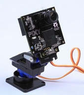

| L'objectif de ce projet est de rendre vivante une caméra pan-tilt
Ce projet est séparé en deux parties : une figure imposée et une figure libre. |
 |
La caméra suit une boule de couleur, et la place constamment au centre de l'image
Dans cette partie du projet, nous allons mettre en place un jeu du style labyrinthe.
L'environnement du jeu sera composé de 4 pièces dessinées en 2D augmentée.
Le but du jeu est de se déplacer dans les quatre pièces pour trouver les gestes à faire pour sortir du jeu. Les gestes sont indiqués sur certains murs des pièces.
Le joueur disposera de 2 balles de couleurs différents. Avec l'une il pourra se déplacer en faisant des mouvements, avec l'autre il devra réaliser les figures pour sortir du jeu.
Faire entièrement : Reconnaissance de 2 couleurs en même temps
Commencer : Reconnaissance des gestes pour se déplacer
Commencer : Interface graphique et environnement du jeu
Finir : Reconnaissance des mouvements
Finir : Interface graphique
Finir : Environnement du jeu
Finir : Evolution de l'environnement du jeu grâce aux mouvements